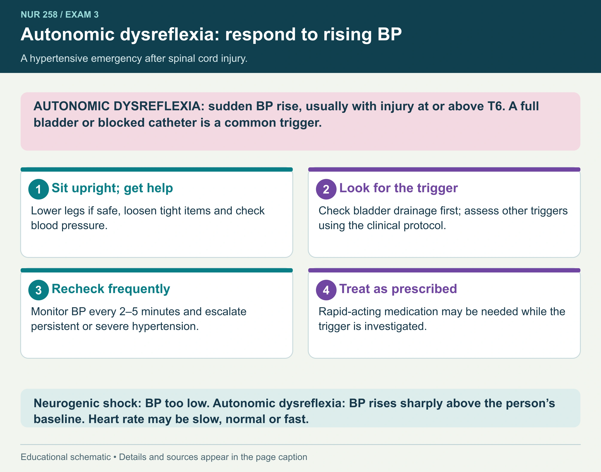
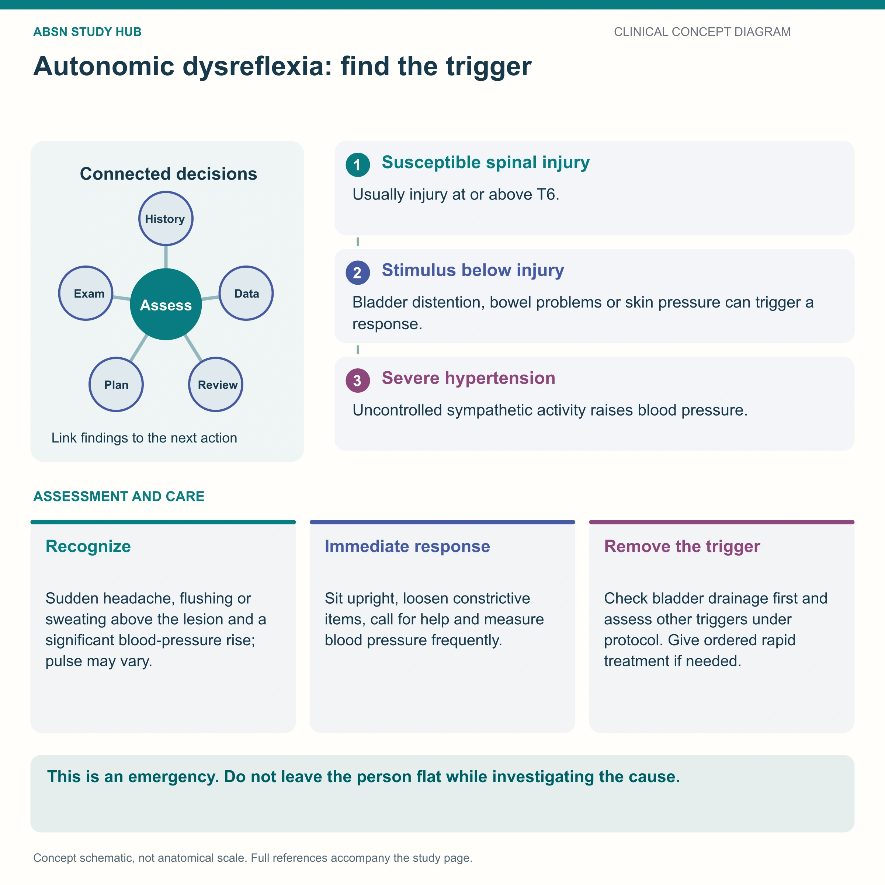
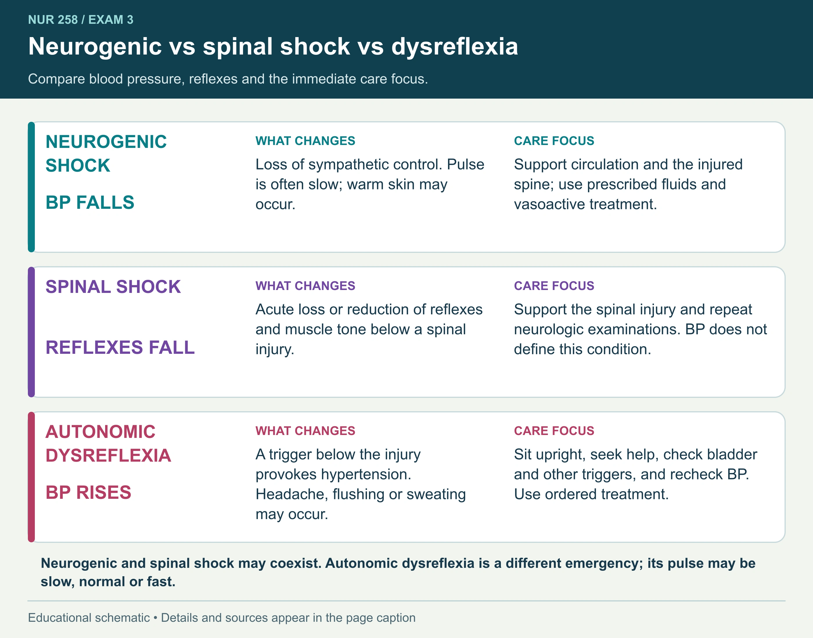

Blood pressure rises
A rise of more than 20 mmHg in adult systolic BP above the person’s usual baseline may signal autonomic dysreflexia. People with high spinal injuries often have lower baseline pressure.
Recognize a sudden rise in blood pressure after spinal cord injury, act promptly, and find the trigger.
Compare with the person’s usual baseline.
A full bladder or blocked catheter is a common trigger.
Monitor BP and follow the emergency plan.
Usually associated with spinal cord injury at or above T6; presentations vary.
A rise of more than 20 mmHg in adult systolic BP above the person’s usual baseline may signal autonomic dysreflexia. People with high spinal injuries often have lower baseline pressure.
Possible findings include a pounding headache, flushing or sweating above the injury, blurred vision, nasal congestion and goosebumps. Some episodes have few symptoms. Your textbook pattern: severe hypertension with bradycardia; the pulse can vary, so a normal rate does not rule it out.
📘 Course study notes
A blocked bladder can kill a patient with a spinal cord injury. The one emergency where sitting the patient UP is the treatment.
The signs divide at the level of injury, and that split is the giveaway.
| ABOVE the injury | BELOW the injury | |
|---|---|---|
| Vessels | Dilated | Clamped shut |
| Skin | Flushed, sweating profusely | Pale, cold, goosebumps |
| Symptom | Pounding headache, blurred vision, nasal congestion | Nothing felt — no sensation |
BP ↑↑↑ HR ↓ Severe hypertension with bradycardia. A systolic of 200+ is common, and a “normal” 120/80 may already be dangerously high — many people with high spinal injuries run a baseline systolic in the 90s.
Always compare to the patient's OWN baseline. A 40 mmHg rise above their normal is a crisis, whatever the absolute number.
The classic first complaint is a sudden pounding headache. Combined with sweating above the injury and goosebumps below, that is autonomic dysreflexia until proven otherwise.
Sit upright, call for help, monitor BP and investigate the trigger.

A sudden rise from the person’s baseline may signal autonomic dysreflexia. Position upright, seek help, assess triggers and monitor BP frequently; medication may be required.
Open full-size graphic ↗ · Source 1Autonomic dysreflexia: respond to rising BP A hypertensive emergency after spinal cord injury. AUTONOMIC DYSREFLEXIA: sudden BP rise, usually with injury at or above T6. A full bladder or blocked catheter is a common trigger. 1 Sit upright; get help Lower legs if safe, loosen tight items and check blood pressure. 2 Look for the trigger Check bladder drainage first; assess other triggers using the clinical protocol. 3 Recheck frequently Monitor BP every 2–5 minutes and escalate persistent or severe hypertension. 4 Treat as prescribed Rapid-acting medication may be needed while the trigger is investigated. Neurogenic shock: BP too low. Autonomic dysreflexia: BP rises sharply above the person’s baseline. Your textbook pattern: severe hypertension with bradycardia (the picture notes the rate can vary).
📘 Course study notes
This is one of the few emergencies where the first action is to sit the patient UP, not lay them down. Raising the head uses gravity to drop the blood pressure immediately.
Never lay the patient flat, and never leave them to go and find help - use the call bell.
When relieving impaction, use lidocaine jelly first and wait. Digital stimulation without it can make the crisis dramatically worse.
If the catheter is blocked, irrigate gently or replace it — do not force.
Begin with bladder drainage, then assess bowel, skin and other causes.
Check for distension, kinked tubing, drainage problems or a blocked catheter. Follow the catheter-care protocol; avoid forceful manipulation.
Constipation or fecal impaction may trigger an episode. Assessment and intervention need the clinical protocol because stimulation can worsen the response.
Loosen constricting clothing or equipment. Check for pressure injury, burns, ingrown nails or another source of irritation.
Infection, fractures, procedures, sexual activity or labor may contribute. Look for a stimulus even if the person cannot feel it.
The injury interrupts the brain’s control of a strong sympathetic reflex.

📘 Course study notes
Below the injury, the body screams. Above it, nobody can hear.
A painful stimulus below the level of injury triggers massive sympathetic vasoconstriction. The brain detects the resulting hypertension and tries to switch it off — but the signal cannot travel back down past the injury. So the constriction continues unopposed while everything above the injury dilates.
Spinal cord injury at T6 or above. It usually begins after spinal shock resolves and can recur for life.
This is a true medical emergency. Untreated it causes stroke, seizure, retinal hemorrhage or death.
Blood pressure and reflexes point to different problems.

Neurogenic shock affects circulation; spinal shock describes depressed spinal function; autonomic dysreflexia is a sudden hypertensive response to a trigger, usually in injury at or above T6.
Open full-size graphic ↗ · Source 1 · Source 2 · Source 3Neurogenic vs spinal shock vs dysreflexia Compare blood pressure, reflexes and the immediate care focus. NEUROGENIC SHOCK BP FALLS WHAT CHANGES Loss of sympathetic control. Pulse is often slow; warm skin may occur. CARE FOCUS Support circulation and the injured spine; use prescribed fluids and vasoactive treatment. SPINAL SHOCK REFLEXES FALL WHAT CHANGES Acute loss or reduction of reflexes and muscle tone below a spinal injury. CARE FOCUS Support the spinal injury and repeat neurologic examinations. BP does not define this condition. AUTONOMIC DYSREFLEXIA BP RISES WHAT CHANGES A trigger below the injury provokes hypertension. Headache, flushing or sweating may occur. CARE FOCUS Sit upright, seek help, check bladder and other triggers, and recheck BP. Use ordered treatment. Neurogenic and spinal shock may coexist. Autonomic dysreflexia is a different emergency. Your textbook pattern: severe hypertension with bradycardia.
A personal plan helps the patient and caregivers act quickly.
Maintain the prescribed bladder and bowel routines, inspect skin and equipment, and address infections or new irritation.
Keep a record of usual BP, recognize personal warning signs and carry an emergency plan. Ensure caregivers know when to seek urgent help.
Yes. Heart rate does not rule it out. Compare BP with baseline, assess promptly and follow the response plan.
📘 Course study notes